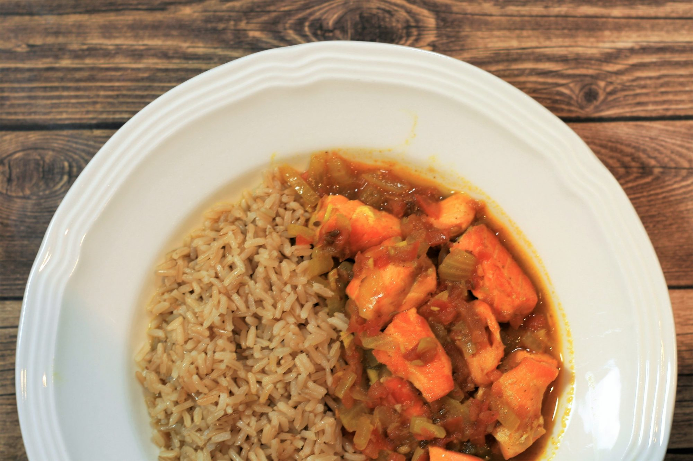

How to make spicy Salmon Curry?

Description
Looking for inspiration on how to spice up salmon dinners? From a sweet-spicy marinade for whole grilled salmon to fiery wasabi mayo salmon fillets, and spicy smoked salmon sushi recipes, we have compiled this versatile collection of showstopping salmon dishes that will satisfy the most ardent spice lovers!
Chunks of salmon are simmered in a spicy sauce made with tomatoes, fresh ginger root, garam masala, cumin seeds, and turmeric to make this salmon curry that's sure to be a family favorite. Serve with brown rice, wild rice, or roti.
Ingredients
- 3 (6 ounce) fillets salmon, cut into cubes
- 3 tablespoons olive oil, divided
- 2 medium onions, sliced
- 4 cloves garlic, minced
- 1 tablespoon minced fresh ginger root
- 2 teaspoons cumin seeds
- 2 teaspoons garam masala
- 1 teaspoon ground turmeric
- 2 tomatoes, grated
- 2 cups water
- salt to taste
Steps
- Heat 2 tablespoons oil in a frying pan over medium-high heat. Gently fry salmon pieces until easily flaked with a fork, about 5 minutes. Drain on paper towels and set aside.
- Heat remaining oil in the same pan over medium heat. Add onions, garlic, and ginger; fry until golden, about 7 minutes. Add cumin, garam masala, and turmeric. Cook and stir until fragrant, about 10 seconds. Add tomatoes; cook until they start to reduce, about 5 minutes. Add water and salt; bring to a boil.
- Return salmon to the pan and reduce heat to low. Simmer until flavors combine, about 10 minutes.